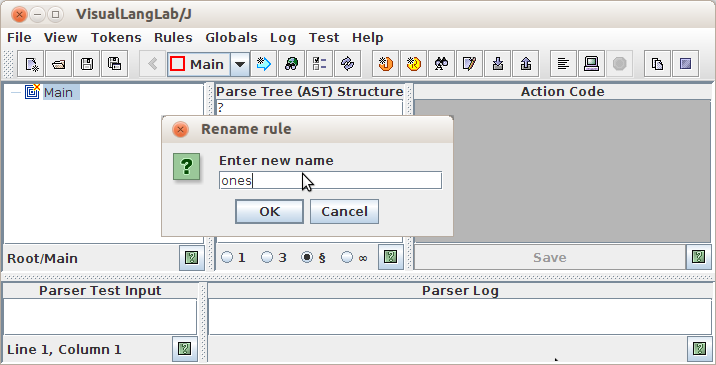
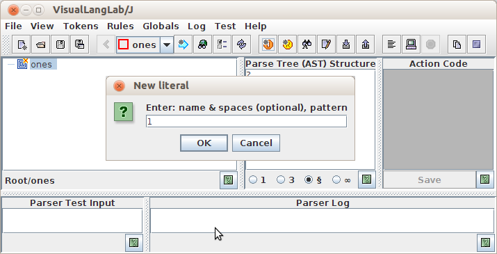
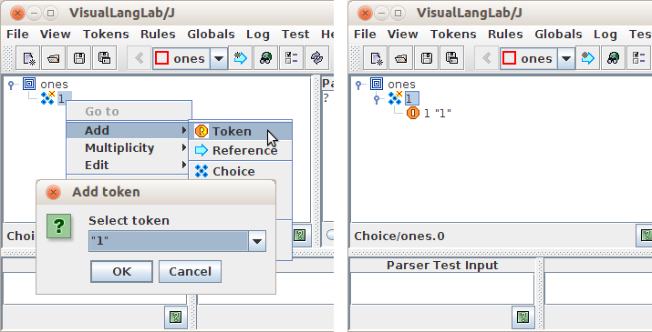

)
by right-clicking the root-node and choosing Add -> Choice from the popup menu
as on the left side of Figure-3 below
)
by right-clicking the root-node and choosing Add -> Choice from the popup menu
as on the left side of Figure-3 belowThis example uses VisualLangLab to create a parser like the one discussed in this scala-user thread.
Download the all-inclusive JAR file
VLLS-All.jar,
and start VisualLangLab by double-clicking VLLS-All.jar.
The only pre-requisite is a 6.0+ JRE.
If using MacOS, Linux, or UNIX, you will need to run "chmod +x VLLS-All.jar" first.
When VisualLangLab starts up, it creates a new parser-rule called Main by default. Rename this parser-rule to ones as follows:
ones into the Rename rule dialog (B in the figure),
and click the OK buttonThis step (renaming the default parser-rule) is optional, but helps to better align things with the example code.

Figure-1. Renaming the default parser-rule to "ones"
Since in-line literals can not be used in VisualLangLab, create a named literal token to represent "1" as follows:
ONE, 1 into the New literal dialog (red oval in the figure),
and click the OK button

Figure-2. Create literal token "ONE"
The text entered into the New literal dialog contains a token-name and token-pattern separated by a comma. Additional spaces are permitted around the comma for clarity. The token-name is used in parser-rules as will be seen below.
To complete the parser-rule ones (ones: PackratParser[Any] = "1" | ones ~"1"),
proceed as follows:
)
by right-clicking the root-node and choosing Add -> Choice from the popup menu
as on the left side of Figure-3 below
Figure-3. Adding a choice node

Figure-4. Adding first ONE token
Figure-5. Adding a sequence node
 )
by right-clicking it and choosing Add -> Reference from the popup menu
as on the left side of Figure-6 below. Select ones from the popped-up dialog,
and click the dialog's OK button
)
by right-clicking it and choosing Add -> Reference from the popup menu
as on the left side of Figure-6 below. Select ones from the popped-up dialog,
and click the dialog's OK button
Figure-6. Adding a reference node
)
by right-clicking it and choosing Add -> Token from the popup menu
as on the left side of Figure-7 below. Select ONE from the popped-up dialog,
and click the dialog's OK button

Figure-7. Adding second ONE token
We're done. The parser is now ready for testing!
Figure-8 below demonstrates the ease of testing in VisualLangLab. Enter your parser test input under Parser Test Input ("1" in the red box at lower left), click the Parser input button (under red circle), and validate the output (in blue box following the "result follows:" under Parser Log).

Figure-8. Testing Part-1
To interpret the output (Pair(0, 1)) you must understand the AST structure, but suffice it to say that your parser successfully handled the solitary "1" in the test input. So, let's move on to something 100% more complex: a pair of "1"s in the input!
Adding another "1" to the Parser Test Input box, and clicking the Parse input button again, however, produces the unhappy result in Figure-9 below.
Figure-9. Testing Part-2
What did we do to deserve this? VisualLangLab's visual grammars (being based on
Scala's parser combinators) implement ordered alternation, so the second
branch of the choice is not used if the first branch matches part of the input.
The solution in this case is obvious -- just switch the two branches by dragging
the sequence icon ()
up above its sibling "ONE" token
( ).
The resulting grammar-tree should look like the one in Figure-10 below.
Observe that the change also influences the structure of the AST (under Parse Tree (AST)
Structure, to the right of the grammar-tree).
).
The resulting grammar-tree should look like the one in Figure-10 below.
Observe that the change also influences the structure of the AST (under Parse Tree (AST)
Structure, to the right of the grammar-tree).
Figure-9. Testing Part-3
But clicking the Parse input button again (with two "1"s still in the Parser Test Input box) precipitates the catastrophe in Figure-10 below.
Figure-10. Testing Part-4
A careful review of the structure of the parser-rule (or grammar-tree) quickly reveals that the parser includes a left-recursive reference. This calls for the use of packrat parsing, and you can endow ones appropriately by right-clicking the root-node and selecting Packrat from the popup menu as in Figure-11 below. The grammar-tree should now look like the one on the right of Figure-11.
Figure-11. Setting the Packrat flag
Clicking the Parse input button again now produces the happy result in Figure-12 below.
Figure-12. Result with Packrat flag set
Adding more "1"s to the input produces ever more deeply nested AST structures as expected.
For more information about VisualLangLab check out the tutorials Grammar without Tears and Rapid Prototyping for Scala.